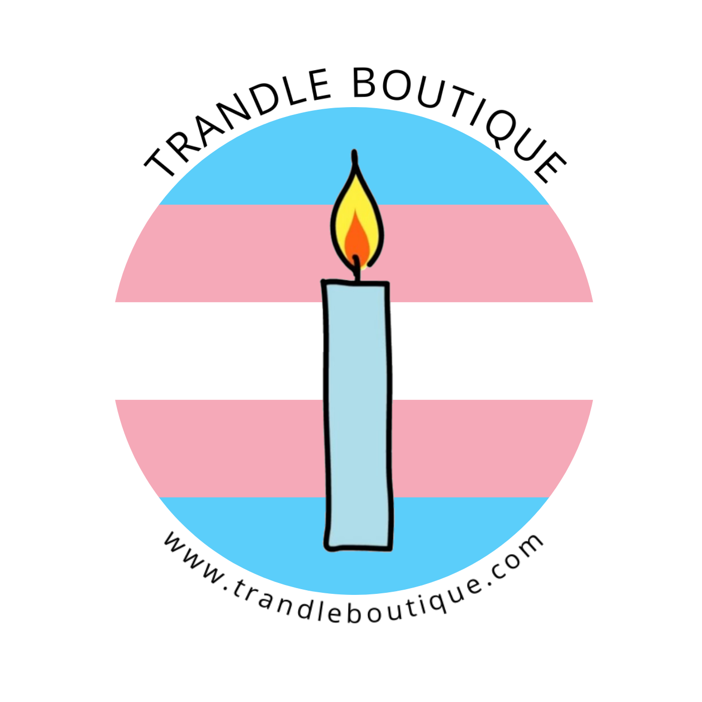
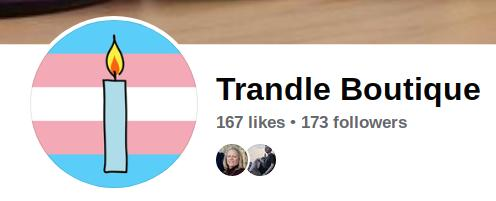
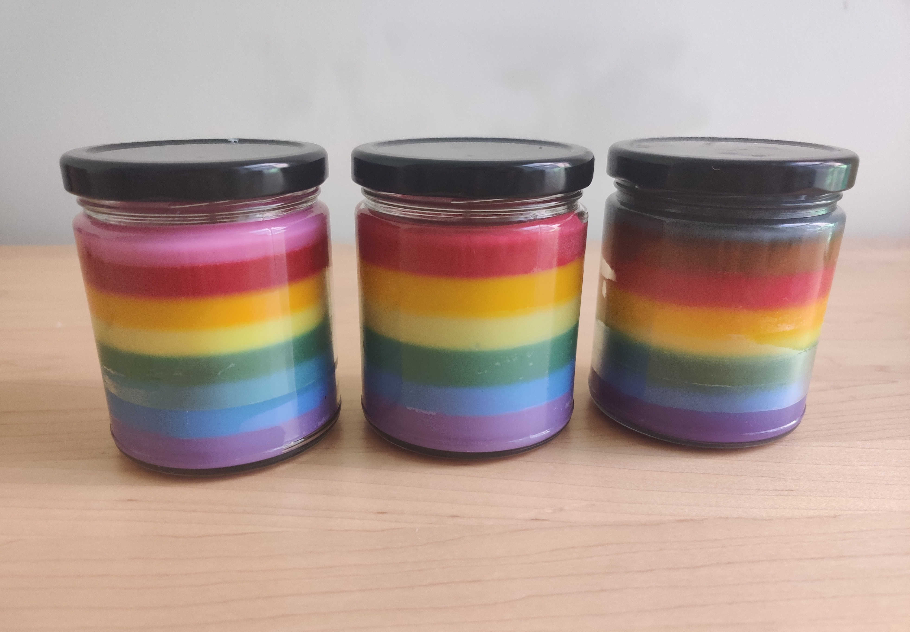
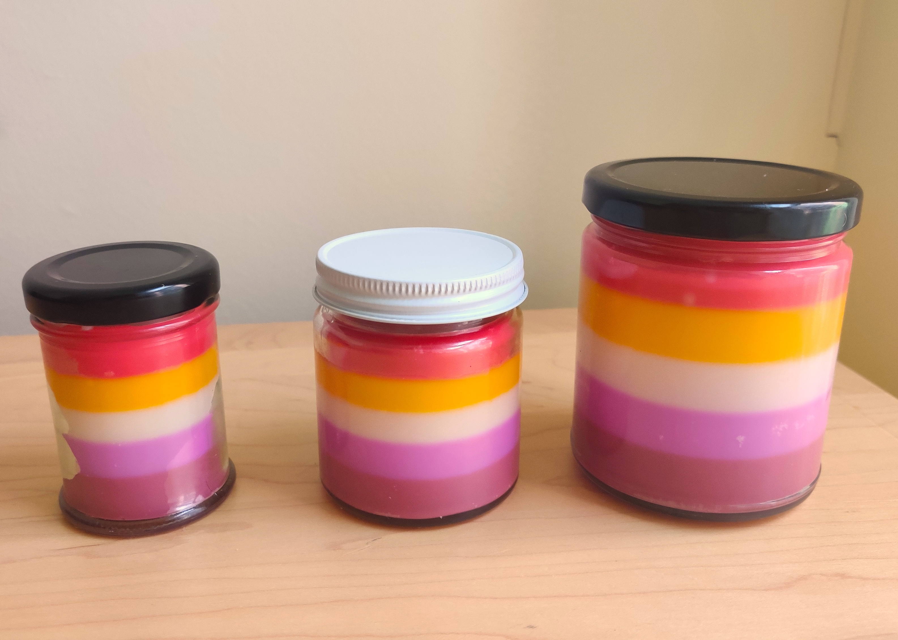
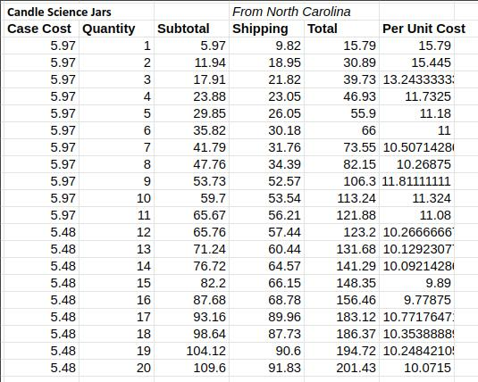

Maeve Stites
B.S. in Electrical and Computer Engineering,
Olin College of Engineering.
Searching for full time engineering or data science job.
Store page of my candle business for my first day of operation.
Overview
During the COVID lockdown period of 2020-2021, I ran an online candle shop that specialized in making affordable, eco-friendly, and quality LGBTQ+ pride flag candles. My candles were poured using soy wax, a more environmentally friendly alternative to the most commonly used oil base paraffin wax. All glass jars I used were of recycled materials. My packaging materials and boxes were all either reuse or made of recycled materials.
In addition to providing a fun opportunity to turn my kitchen into a candle assembly line, this business venture gave me valuable entrepreneurial and management skills. I continually worked to drive down my material costs by sourcing new suppliers and purchasing in volume (while still ensuring I could sell all the product I was purchasing). I managed advertisements and social media pages across a variety of platforms to maximize my click through rate (CTR) and minimize the cost of customer acquisition. I ran sales to increase shop traffic and used Etsy analytic information to increase the efficacy of these sales. I kept detailed records of all my accounting information including product cost, tooling costs, revenue, and profit per unit sold.
While I have no intention of managing a candle business long term, this was a valuable and rewarding experience. I had over 90% 5 star reviews and many happy customers! I also formed a close relationship with a local non-profit that was focused on creating LGBTQ+ community spaces. I was honored that my business provided candles for their events and as sponsor gifts. In addition to my candle services, I worked with them to design and produce LGBTQ+ pride themed masks that came in children's sizes, a product that was not widely available at the time.
Documentation & Photos
Branding
I developed simple but recognizable branding across my various platforms and candle products. This included a logo, business cards, and candle stickers. These are pictured below.The business card for my candle shop. I included one in every box I sent out and distributed them to the organizations I partnered with.
The candle label that was applied to my products.
The shop Facebook page featuring the Trandle Boutique logo.
Products
Below are some pictures of some of my best selling products. I also made custom batches upon request and ran a number of one-off candle batches. These one-off batches were a strategy to reach a wider market, draw in customers, and increase customer satisfaction and retention.The 4oz trans pride flag candle, my best selling product. Fun fact my best selling scent in this variety was Fruit Loops! A scent I haven't seen any other shop offer.
My 8oz pride flag line featuring the original Gilbert Baker design, common six stripe, and Philadelphia pride flag. I normally only stocked the Philadelphia variant, as that was my top selling variety. I sold all three varieties during pride month to pay homage to the flag's history.
The Baker design was the first iteration of the rainbow pride flag, created as a symbol in the gay liberation movement. The pink stripe was removed due to shortages and expenses in acquiring the necessary fabric, with the indigo stripe following shortly. This resulted in the middle six stripe design. The Philadelphia pride flag features brown and black stripes to recognize people of color within the LGBTTQ+ community and call attention to the racism they face both within and outside of the community.
All three sizes of my lesbian pride flag candles, featuring the most commonly used sunset lesbian flag design. This was a particularly challenging candle to develop as many of the colors are quite similar to one another. Getting precise color out of soy wax requires a large amount of trial and error with different dyes and dye ratios.
Business Management
Per unit costs tool: The first set of rows contain the calculations for candle costs estimated material usages. The second set of rows is the same calculation but with an estimated 20% higher material cost.
Calculations to determine the most cost effective way to bulk purchase jars. Accounting for shipping price, I found the cheapest offering to buy 16 cases as this allowed me to get the lowest case price while still being able to ship via USPS. Larger shipments require FedEx or UPS, both of which are more expensive in this scenario. I ran these calculations for multiple suppliers.